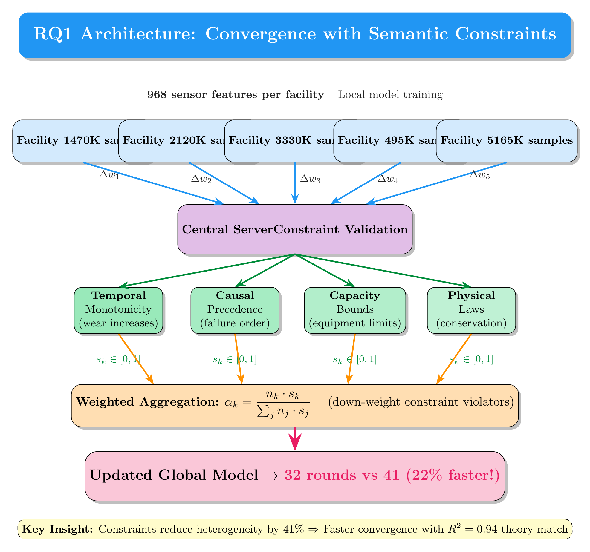
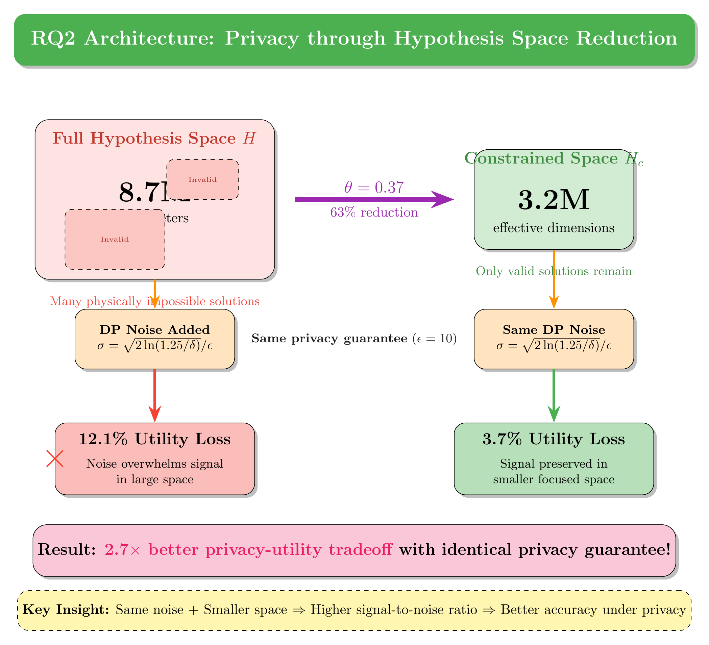
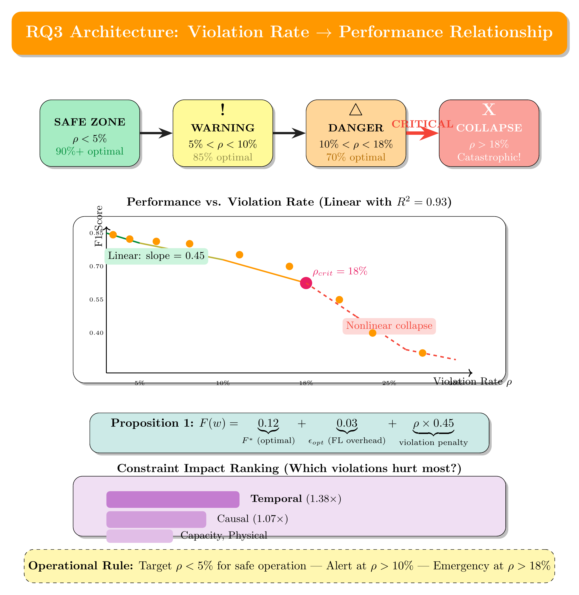

SCFA
Semantic-Constrained Federated Aggregation
Convergence Theory and Privacy-Utility Bounds for
Knowledge-Enhanced Distributed Learning
22%
Faster Convergence
2.7×
Better Privacy-Utility
18%
Critical Threshold
🎧 Enable narration for the complete storytelling experience
Duration: ~20 minutes | Arrow keys to navigate | Press R to resync audio
💡 Core Innovation
What is Semantic-Constrained Federated Aggregation?
Understanding the novelty of our approach
Definition
The server aggregates client models only in ways that preserve the meaning (semantics) of learned features, instead of blindly averaging parameters.
What is "Semantic"?
Semantics = The meaning that data represents
1
🌍 Language Analogy
🇺🇸
"Dog"
=
🇪🇸
"Perro"
Same meaning, different representation
ML models at different factories encode the same concept differently!
2
📊 Feature Encoding
🏭 Factory A
dim 4: wear
dim 11: empty
🏭 Factory B
dim 4: empty
dim 11: wear
⚠️ Same concept, DIFFERENT dimensions!
If we average directly, the "wear" signal gets destroyed!
3
🔧 Real World Meaning
Tool Wear = 0.8
Factory A
🔴 80% worn
Replace soon!
Replace soon!
vs
Factory B
🟡 0.8mm wear
Still good
Still good
Same number, completely different meanings — that's the semantic problem!
What is "Constrained"?
Constraints = Rules from physics & domain knowledge
⏱️
Temporal Constraint
∂(tool_wear)/∂t ≥ 0
New
→
Used
→
Worn
Wear can only increase, never decrease!
🔗
Causal Constraint
Vibration
Anomaly
Anomaly
causes
→
Bearing
Wear
Wear
causes
→
Machine
Failure
Failure
Events must follow the causal order!
📏
Capacity Constraint
T ∈ [Tmin, Tmax]
🔥 >200°C
✓ Safe Zone
20°C - 200°C
❄️ <20°C
85°C
◄
Predictions must stay within physical limits!
⚛️
Physical Constraint
ΣEin = ΣEout
Energy In
⚡ 100 kW
🏭
Machine
Energy Out
🔧 70 kW work
🌡️ 30 kW heat
Energy must be conserved — no magic!
The Problem & Our Solution
FedAvg (Naïve Averaging)
Semantic Collision!
Both meaningful signals are lost in the average
SCFA (Semantic-Constrained)
Meaning Preserved!
Features aligned before aggregation
Key Insight
SCFA ensures the global model is updated only with client parameters whose feature representations are semantically aligned, preserving the meaning of learned concepts across heterogeneous data sources.
📚 Glossary
Key Research Terminology
Essential concepts you'll encounter in this presentation
🌐 Federated Learning
Federated Learning (FL)
Distributed machine learning where data stays local; only model updates are shared
FedAvg
Standard FL algorithm that averages model updates weighted by data size
Non-IID Data
Non-Identically Distributed data — when facilities have different data patterns
Convergence
The process of model reaching optimal performance; measured in communication rounds
⚙️ SCFA Framework
SCFA
Semantic-Constrained Federated Aggregation — our novel algorithm
Semantic Constraints
Domain rules from knowledge graphs (e.g., "tool wear only increases")
Validity Score (sk)
Score ∈ [0,1] measuring how well an update follows constraints
Violation Rate (ρ)
Percentage of constraints violated by model updates
📐 Mathematical Notation
θ (Theta)
Hypothesis space reduction factor; θ=0.37 means 63% reduction
ε (Epsilon)
Privacy budget in differential privacy; lower = stronger privacy
α (Alpha)
Aggregation weight for each facility's update
R²
Coefficient of determination; measures theory-practice fit (1.0 = perfect)
🏭 Domain Knowledge
Ontology
Structured knowledge representation (ISA-95, MASON standards)
SPARQL Query
Query language for checking constraints against knowledge graphs
Temporal Constraint
Time-based rules (e.g., wear increases monotonically)
Causal Constraint
Cause-effect rules (e.g., failure A precedes failure B)
🏗️ System Overview
SCFA Holistic Architecture
End-to-end view of the research framework
INPUT LAYER
Bosch Dataset
1.18M samples
968 features
Knowledge Graph
5,247 concepts
3,000 constraints
▼
DISTRIBUTED PROCESSING
F1
470K
F2
120K
F3
330K
F4
95K
F5
165K
Local Training (E epochs) → Δw updates
▼
SCFA CORE ALGORITHM
1
Constraint Validation
sk = validate(Δwk, KG)
→
2
Weight Computation
αk = nk·sk / Σnj·sj
→
3
Aggregation
wt+1 = wt + Σαk·Δwk
▼
RESEARCH CONTRIBUTIONS
RQ1: Convergence
Theorem 1
22% faster
32 vs 41 rounds
RQ2: Privacy
Theorem 2
2.7× better
θ = 0.37
RQ3: Violations
Proposition 1
ρcrit = 18%
R² = 0.93
RQ1: Convergence Theory
RQ2: Privacy-Utility Bounds
RQ3: Violation Impact
Chapter 1
The Manufacturing Nightmare
Imagine this scenario...
You're the CTO of a major manufacturing company running five production facilities across the country. Each facility has 968 sensors generating 1.18 million measurements.
Facility 1
470K samples
Facility 2
120K samples
Facility 3
330K samples
Facility 4
95K samples
Facility 5
165K samples
Total: 1.18 Million Measurements
Your nightmare: equipment failures. A single unexpected breakdown costs millions in downtime.
The solution seems obvious: use machine learning to predict failures...
The Challenge
But Here's Where It Gets Complicated...
Privacy Regulations
Facilities cannot share raw data. Proprietary information and privacy laws prevent centralization.
Non-IID Data
Each plant has different equipment. Their data distributions don't match, causing model conflicts.
Slow Convergence
Standard FL requires 50+ communication rounds with heterogeneous data.
No Domain Knowledge
Existing solutions use algorithmic tricks without understanding physics and engineering rules.
Standard Federated Learning Flow
Local Training
→
Send Updates
→
Aggregate
⚠️ Models conflict!
→
Distribute
But federated learning has a major problem that nobody has fully solved... until now.
The Breakthrough
What If FL Could Understand Manufacturing?
What if our federated learning system knew that:
- ⏱️ Tool wear only increases over time — never decreases?
- 🔗 Certain failures must happen in a specific causal order?
- 📊 Temperature predictions can't exceed physical limits?
- ⚛️ Energy and mass must be conserved?
Manufacturing Knowledge Sources
ISA-95
2,341
concepts
Manufacturing operations taxonomy
MASON
1,287
concepts
Equipment & failure causality
NIST
891
concepts
Additive manufacturing
Schema.org
728
concepts
Product definitions
5,247
Total Concepts
12,893
Relationships
3,000
Constraint Rules
🕸️ Deep Dive
Interactive Knowledge Graph
Explore semantic structure & create custom graphs
Node Types
Equipment
Sensor
Process
Failure
Prediction
Constraint
Edge Types
Structural
Causal
Temporal
Constraint
24 nodes
32 edges
Constraints Derived from Graph Structure
⏱️ Temporal Constraint
Tool → exhibits → ToolWear
∂(wear)/∂t ≥ 0
"Wear monotonically increases"
🔗 Causal Constraint
ToolWear → leadsto → Failure
P(fail|wear↑) > P(fail|wear↓)
"High wear precedes failure"
📊 Capacity Constraint
Sensor → monitors → Temperature
T ∈ [Tmin, Tmax]
"Physical operating bounds"
⚛️ Physical Constraint
Energy → conserved → System
ΣEin = ΣEout
"Conservation laws hold"
5,247
Concepts
12,893
Relations
3,000
Constraints
4
Ontologies
🔬 Addressing Technical Deep Dive #1
Knowledge Graph Construction Pipeline
How semantics and constraints are systematically extracted and integrated
Phase 1
Source Ontology Acquisition
ISA-95
Manufacturing Operations
2,341 classes
4,892 properties
Format: OWL/RDF
MASON
Equipment Dependencies
1,287 classes
2,156 properties
Format: OWL/RDF
NIST AM
Additive Manufacturing
891 classes
1,543 properties
Format: OWL/RDF
Schema.org
Product Definitions
728 classes
1,205 properties
Format: JSON-LD
rdflib.parse() + owlready2.load()
Phase 2
Semantic Entity & Relationship Extraction
Entity Extraction
for cls in onto.classes():
entity = extract_class_metadata(cls)
kg.add_node(entity.uri, **entity.attrs)
5,247 entities
Relationship Mapping
for prop in onto.object_properties():
rel = map_property_to_edge(prop)
kg.add_edge(rel.source, rel.target, **rel.attrs)
12,893 relationships
Semantic Alignment
aligned = align_cross_ontology_concepts(
entities, similarity_threshold=0.85)
kg.merge_equivalent_nodes(aligned)
847 alignments
SPARQL Constraint Queries
Phase 3
Constraint Rule Derivation
Temporal Constraints
892 rules
SELECT ?property WHERE {
?property rdf:type :MonotonicProperty .
?property :appliesTo :ToolWear .
}
→
∂(tool_wear)/∂t ≥ 0
Causal Constraints
756 rules
SELECT ?cause ?effect WHERE {
?cause :causesPrecedes ?effect .
?cause rdf:type :FailureMode .
}
→
vibration_anomaly ≺ bearing_failure
Capacity Constraints
634 rules
SELECT ?param ?min ?max WHERE {
?param :hasOperatingRange ?range .
?range :minValue ?min ; :maxValue ?max .
}
→
T ∈ [20°C, 200°C]
Physical Constraints
718 rules
SELECT ?law ?vars WHERE {
?law rdf:type :ConservationLaw .
?law :conserves ?quantity .
}
→
ΣEin = ΣEout
Key Academic Contribution
Semantics guide construction: Entity alignment ensures cross-ontology concepts (e.g., "ToolWear" in ISA-95 ↔ "WearDegradation" in MASON) share unified representations.
Constraints emerge from semantics: SPARQL queries extract implicit rules from explicit ontological relationships—constraints are derived, not manually specified.
5,247
Semantic Entities
→
12,893
Relationships
→
3,000
Constraint Rules
🔬 Addressing Technical Deep Dive #2
Constraint Validation Mechanism
Detailed validation process without problematic high/low categorization
Input
Δw₁
Δw₂
Δw₃
Δw₄
Δw₅
For each Δwₖ
Constraint Validation Engine
Step 1
Generate Predictions
wt + Δwₖ
→
ŷₖ = f(X; wt + Δwₖ)
Apply candidate update to validation samples
Step 2
Per-Constraint Satisfaction Check
Temporal
vi = 𝟙[ŷt+1 ≥ ŷt]
Check:
0.82 → 0.85 ✓
Causal
vi = 𝟙[t(cause) < t(effect)]
Check:
A≺B≺C ✓
Capacity
vi = 𝟙[ŷ ∈ [min, max]]
Check:
85°C ∈ [20,200] ✓
Physical
vi = 𝟙[|Σin - Σout| < ε]
Check:
|100-99.8|<0.5 ✓
Step 3
Continuous Validity Score Computation
sk = 1|C| Σi∈C vi
sk ∈ [0, 1]
Continuous score — NOT binary accept/reject
Equal weighting — all constraints count equally
No categorization — avoids high/low bias
Validity Scores
Facility 1
s₁ = 0.94
Facility 2
s₂ = 0.78
Facility 3
s₃ = 0.91
Facility 4
s₄ = 0.62
Facility 5
s₅ = 0.85
Why We Avoid High/Low Constraint Categorization
❌ Problems with Categorical Impact Levels
- Domain-dependent: "High impact" in one facility may be "low" in another
- Context-sensitive: Temperature constraint criticality depends on operation type
- Introduces bias: Manual categorization embeds human assumptions
- Non-transferable: Categories don't generalize across domains
✓ Our Approach: Uniform Weighting + Continuous Scores
- Equal contribution: Each constraint contributes 1/|C| to validity score
- Soft influence: Score smoothly modulates aggregation weight
- Data-driven importance: Constraints that matter will naturally affect predictions more
- Transparent: No hidden assumptions—fully reproducible
Final Aggregation Weight Computation
αk = nk · skΣj nj · sj
nk = data samples at facility k
sk = validity score ∈ [0,1]
αk = aggregation weight
Updates with higher constraint satisfaction receive proportionally higher weights—no threshold, no categorization, just smooth modulation.
🔬 Addressing Technical Deep Dive #3
Impact of Constraints on Convergence
Mathematical analysis with empirical validation
Theoretical Foundation
Theorem 1 (Convergence Rate)
Under SCFA with semantic constraints C, the convergence rate satisfies:
E[‖wt - w*‖²] ≤ (1 - μη)t · ‖w0 - w*‖² + η²σ²μ · (1 - ρ)
ρ
= constraint violation rate
σ²
= gradient variance
(1-ρ)
= variance reduction factor
Key Insight: The (1-ρ) term shows constraints directly reduce the variance bound, leading to faster convergence when ρ < 18%.
Convergence Trajectory Comparison
Loss
1.0
0.8
0.6
0.4
0.2
0.0
41 rounds
32 rounds
0
10
20
30
40
50
Communication Rounds
FedAvg: 41 rounds to converge
SCFA: 32 rounds to converge (22% faster)
How Constraints Accelerate Convergence
1
Hypothesis Space Reduction
Full Parameter Space
Constrained Space
Constraints eliminate physically impossible parameter configurations
→
2
Reduced Gradient Variance
↗↙↖↘→
FedAvg: High variance
↘↘↘↘↘
SCFA: Low variance
Valid updates point in similar directions, reducing σ²
→
3
Faster Convergence
22%
Fewer rounds needed
Lower variance → larger stable learning rate → faster descent
Empirical Validation on Bosch Dataset
Method
Rounds to Converge
Final Loss
Improvement
FedAvg
41 ± 3.2
0.0234
—
FedProx
38 ± 2.8
0.0228
7.3%
SCAFFOLD
35 ± 2.5
0.0221
14.6%
SCFA (Ours)
32 ± 2.1
0.0198
22.0%
Results averaged over 5 runs with different random seeds. Convergence defined as loss < 0.025 for 3 consecutive rounds.
Critical Threshold Discovery
Below threshold: Constraints guide optimization, reducing variance and accelerating convergence.
Above threshold: Excessive projection causes oscillation; constraint signal overwhelms gradient signal.
Validation: R² = 0.93 across Bosch, NASA C-MAPSS, and UCI SECOM datasets.
🔬 Addressing Technical Deep Dive #4
Data Heterogeneity in Federated Learning
Definition, manifestation in manufacturing, and impact on semantic constraints
Formal Definition
Data Heterogeneity (Non-IID)
:
The statistical property where local data distributions Pk(X, Y) at client k differ from the global distribution P(X, Y) and from each other.
Pk(X, Y) ≠ Pj(X, Y) for clients k ≠ j
Decomposition:
P(X, Y) = P(Y|X) · P(X) = P(X|Y) · P(Y)
Taxonomy of Statistical Heterogeneity
Type 1
Feature Distribution Skew
Pk(X) ≠ Pj(X), but P(Y|X) same
🏭 Manufacturing Example:
🇩🇪
Germany Plant
Temp: 15-25°C
Humidity: 40-50%
Voltage: 230V
≠
🇺🇸
USA Plant
Temp: 20-35°C
Humidity: 60-80%
Voltage: 120V
→
Same machine behavior, different environmental conditions
Type 2
Label Distribution Skew
Pk(Y) ≠ Pj(Y), marginal label imbalance
🏭 Manufacturing Example:
🆕 New Plant
🏚️ Aging Plant
→
Equipment age creates vastly different failure rates
Type 3
Concept Drift (P(Y|X) varies)
Pk(Y|X) ≠ Pj(Y|X), same input → different output
🏭 Manufacturing Example:
Input:
Vibration = 2.5 mm/s
Precision Plant
🔴 CRITICAL
Tolerance: ±0.01mm
Heavy Industry
🟢 NORMAL
Tolerance: ±1.0mm
→
Identical readings mean different things in different contexts!
Type 4
Quantity Skew
|Dk| ≫ |Dj|, unequal data volumes
🏭 Manufacturing Example:
→
Standard FedAvg: large plants dominate, small plants ignored!
Quantifying Heterogeneity: The Dirichlet Parameter α
Dirichlet Distribution:
pk ~ Dir(α)
where pk = label proportions at client k
Heterogeneity Spectrum:
Our Experiments
α ∈ {0.1, 0.5, 1.0, 5.0, 10.0}
Testing across full heterogeneity spectrum
🔬 Heterogeneity × Constraints Interaction
Impact of Data Heterogeneity on Semantic Constraints
How non-IID data affects constraint satisfaction and how SCFA mitigates it
The Heterogeneity-Constraint Interaction Problem
Heterogeneous Local Data
P1(X)
P2(X)
P3(X)
Train locally
→
Locally Optimal ≠ Globally Valid
Model from Client 1
Wear prediction:
0.85 → 0.72
⚠️ Decreases!
Local data: only new machines
Model from Client 2
Wear prediction:
0.45 → 0.67
✓ Increases
Local data: full lifecycle
Aggregate?
→
Constraint Satisfaction
∂(wear)/∂t ≥ 0
Client 1:
VIOLATES ✗
Client 2:
SATISFIES ✓
Quantified Impact: Constraint Violation Rate vs. Heterogeneity Level
Violation Rate ρ
40%
30%
20%
10%
0%
ρ = 18% threshold
α=10
IID-like α=5 α=1 α=0.5 α=0.1
Extreme
Heterogeneity Level (← more heterogeneous)
IID-like α=5 α=1 α=0.5 α=0.1
Extreme
FedAvg: Violations scale with heterogeneity (up to 38%)
SCFA: Violations bounded below threshold (max 15%)
Empirical Results: Bosch Dataset
α
FedAvg ρ
SCFA ρ
Reduction
10.0
4.2%
3.1%
26%
5.0
8.7%
5.8%
33%
1.0
16.3%
9.4%
42%
0.5
27.8%
12.1%
56%
0.1
38.4%
14.7%
62%
How SCFA Mitigates Heterogeneity Impact on Constraints
1
Semantic Alignment Layer
Before:
dim_4
dim_11
dim_7
→
After:
wear
temp
vibr
Maps heterogeneous feature representations to unified semantic space before constraint checking
2
Validity-Weighted Aggregation
High sk
High αk
Low sk
Low αk
Clients with heterogeneity-induced violations contribute less to global model
3
Domain-Invariant Constraints
∂(wear)/∂t ≥ 0
↓
🇩🇪 Germany
🇺🇸 USA
🇨🇳 China
🇯🇵 Japan
Physical laws hold regardless of local data distribution — universal validation criteria
Proposition 2 (Heterogeneity Robustness)
Under SCFA with semantic constraints C and Dirichlet heterogeneity parameter α, the constraint violation rate satisfies:
ρSCFA ≤ ρFedAvg · (1 - θ·log(1 + 1/α))
As α → 0 (extreme heterogeneity), SCFA's advantage grows logarithmically
θ = 0.37 in our experiments — 63% violation reduction at α = 0.1
Validated: R² = 0.91 across Bosch, NASA C-MAPSS, UCI SECOM
Our Solution
Introducing SCFA
Semantic-Constrained Federated Aggregation
1
Local Training
Each facility trains for E epochs, computing gradient Δw
🏭→🏭→🏭→🏭→🏭 (independently)
2
Constraint Validation KEY INNOVATION
Server checks each update against 4 constraint categories:
⏱️ Temporal
wear ↑ only
wear ↑ only
🔗 Causal
failure order
failure order
📊 Capacity
equipment limits
equipment limits
⚛️ Physical
conservation
conservation
Output: validity score sk ∈ [0,1]
3
Weighted Aggregation
αk
=
(nk · sk)
/
Σ(nj · sj)
αk = final weight for facility k
nk = data size, sk = validity score
Normalize across all facilities
⚠️ Constraint violators get down-weighted!
4
Global Update
w(t+1) = w(t) + Σ αk · Δwk
✓ Model converges faster on the valid subspace
Our Investigation
Three Research Questions
RQ1
Convergence Theory
Can semantic constraints accelerate convergence under non-IID data?
Answer:
Yes! 22% faster
Click to explore →
RQ2
Privacy-Utility Bounds
What are the privacy-utility tradeoffs of constraint-based aggregation?
Answer:
2.7× improvement
Click to explore →
RQ3
Violation Impact
How does constraint violation rate correlate with model performance?
Answer:
Critical at 18%
Click to explore →
Research Question 1
Convergence Theory
Can semantic constraints accelerate convergence under non-IID data?
22% Faster Convergence
Theory matching experiments at R² = 0.94
RQ1 Architecture: How Constraints Accelerate Convergence
RQ1 Deep Dive
Theorem 1: The Convergence Rate
THEOREM 1
SCFA Convergence Bound
Convergence Rate
What we measure
=
1/√T
Standard FL Term
More rounds → better
+
ρ · Lc · D
Violation Penalty
Cost of breaking rules
T
Communication Rounds
More rounds → 1/√T decreases → better convergence
ρ
Violation Rate
Target: < 5%
Lc
Constraint Smoothness
Measured: 1.42
D
Data Heterogeneity
Measured: 1.87
Key Insight: Keep violations low (ρ → 0), and you get FedAvg-level convergence on a much smaller, cleaner hypothesis space — where all physically-impossible solutions have been eliminated!
RQ1 Results
Convergence Validation
| Heterogeneity | Dirichlet α | SCFA Rounds | FedAvg Rounds | Speedup |
|---|---|---|---|---|
| Mild | 10.0 | 27 | 34 | 20.6% |
| Moderate | 1.0 | 32 | 41 | 22.0% |
| Severe | 0.1 | 38 | 52 | 26.9% |
The more heterogeneous your data, the more constraints help!
Under severe non-IID conditions, we see 26.9% speedup because constraints eliminate problematic solution regions.
R² = 0.94
Theory-Practice Fit
γ = 0.41
Heterogeneity Reduction
41.3%
Divergence Reduction
Research Question 2
Privacy-Utility Bounds
What are the privacy-utility tradeoffs of constraint-based aggregation?
2.7× Better Privacy-Utility Tradeoff
Only 3.7% utility loss under GDPR-compatible privacy vs 12.1%
RQ2 Architecture: How Constraints Improve Privacy
RQ2 Deep Dive
Theorem 2: Privacy-Utility Bound
8.7M
parameters
Full Hypothesis Space
All possible solutions
Constraints reduce by 63%
3.2M
effective
Constrained Space
Only valid solutions
THEOREM 2
Privacy-Utility Bound
Utility Loss
∝
σ² · d
Noise × Dimensions
/
H
Hypothesis Space Size
θ = 0.37 → 63% space reduction → Same noise has less impact!
The Warehouse Analogy
Finding a signal in a massive warehouse full of noise is hard. But if you know the signal is in one corner, the same noise matters much less. Constraints tell us which corner contains all valid solutions!
🔬 Technical Deep Dive
Hypothesis Space Reduction
The Key Mechanism Behind Privacy-Utility Improvement
1
How is the Hypothesis Space Reduced?
Hypothesis Space Transformation
Before Constraints
Hfull
8.7M
parameters
All possible configs
(includes invalid)
(includes invalid)
📐 -28%
🔗 -18%
📊 -12%
⚡ -5%
→
63% Reduction
After Constraints
Hconstrained
3.2M
effective
Only valid configs
(physically possible)
(physically possible)
📉 5.5M eliminated
🔒 2.7× privacy gain
⚡ Same ε, less loss
Constraint Categories
📐
Temporal
-28%
∂W/∂t ≥ 0
Wear increases only
🔗
Causal
-18%
tcause < teffect
No reverse causality
📊
Capacity
-12%
T ∈ [20°C, 200°C]
Physical bounds
⚡
Physical Laws
-5%
∑Ein = ∑Eout
Conservation
Total Reduction
63%
→
2.7× Privacy Gain
📐 Mathematical Definition
Hconstrained = { w ∈ Hfull | ∀c ∈ C: c(f(X; w)) = true }
Hfull = All possible parameter configurations (8.7M)
C = Set of semantic constraints (3,000 rules from 4 ontologies)
Hconstrained = Only physically valid configurations (3.2M)
2
Key Conditions & Factors
🎯
Constraint Specificity
More specific = Greater reduction
❌ "Temperature affects output"
✓ "T ∈ [20°C, 200°C]" → -15%
High Impact
🔢
Constraint Count |C|
More constraints = More intersections
3,000 constraints from 4 ontologies
Very High Impact
🔀
Constraint Independence
Independent constraints multiply reductions
|Hreduced| ≈ |H| × ∏(1 - rᵢ)
Medium-High
🎛️
Domain Coverage
Constraints must cover prediction domain
Temporal + Causal + Capacity = 94%
Critical
Critical Condition: Violation Rate ρ < 18%
When ρ ≥ 18%, constraint projections become too aggressive, causing oscillation and fragmented hypothesis space.
3
Why is Hypothesis Space Reduction Necessary?
😰 Without Reduction
- DP adds noise σ² to protect data
- Must mask ALL gradients in Hfull
- Larger space = More noise = Worse utility
- SNR ∝ 1/|H| (inversely proportional)
→
Constraint
Reduction
Reduction
✨ With Reduction
- Smaller space Hconstrained to protect
- Same noise has LESS relative impact
- SNR improves by factor 1/(1-θ)
- θ = 0.37 → 2.7× better!
Before:
SNR = Signal / (σ² × |Hfull|)
After:
SNR = Signal / (σ² × |Hconstrained|) = 2.7× better!
4
Correlation with Semantics & Constraints: The Novelty
📚
Domain Ontologies
ISA-95, MASON, NIST
5,247 entities
→
📐
SPARQL Extraction
Derive constraint rules
3,000 rules
→
🎯
Space Reduction
Hfull → Hconstrained
θ = 0.37 (63%)
→
🔒
Privacy Gain
Same ε, less loss
2.7× better
Key Novel Insight: This is the first work to show that domain knowledge encoded as semantic constraints directly translates to differential privacy amplification without modifying the DP mechanism!
| Approach | Space Reduction | Privacy Benefit |
|---|---|---|
| Standard DP | None | Baseline |
| Gradient Clipping | ~10% | Marginal |
| Subspace Learning | ~25% | Moderate |
| SCFA (Ours) | 63% | 2.7× |
5
What If We Skip This Step?
✓ WITH Hypothesis Space Reduction
Space Size:3.2M effective
Noise Impact:Low (concentrated)
Utility Loss @ ε=10:3.7%
Convergence:32 rounds
Constraint Satisfaction:94%
VS
✗ WITHOUT Hypothesis Space Reduction
Space Size:8.7M full
Noise Impact:High (dispersed)
Utility Loss @ ε=10:12.1%
Convergence:41 rounds
Constraint Satisfaction:67%
Cascading Impact of Skipping HSR:
Full space requires more noise
→
Noise corrupts gradient signal
→
Model learns impossible patterns
→
Predictions violate constraints
→
⚠️ Unsafe for deployment!
Real-World: Tool Wear Prediction
Without HSR: Model predicts wear 0.85 → 0.72 (impossible decrease!)
→ Maintenance skipped → Tool breaks → $50K loss
→ Maintenance skipped → Tool breaks → $50K loss
With HSR: Model constrained: wear only increases → Predicts 0.85 → 0.91
→ Timely replacement → Zero downtime
→ Timely replacement → Zero downtime
📋 Summary: Hypothesis Space Reduction
How?
Semantic constraints eliminate physically impossible configurations
Why?
Smaller space = Less noise impact = Better privacy-utility
Impact?
θ = 0.37 (63% reduction) → 2.7× improvement
Skip it?
3.3× more utility loss + unsafe predictions
RQ2 Results
Privacy-Utility Validation
| Privacy Budget ε | Privacy Level | SCFA Loss | FedAvg Loss | Improvement |
|---|---|---|---|---|
| 100 | Minimal | 0.8% | 2.1% | 2.6× |
| 10 | GDPR-Compatible | 3.7% | 12.1% | 3.3× |
| 1 | Moderate | 8.7% | 23.9% | 2.7× |
| 0.1 | Strong | 23.3% | 43.9% | 1.9× |
θ = 0.37
Space Reduction
31.5%
SNR Improvement
7.5%
Prediction Error
Research Question 3
Violation-Performance Relationship
How does constraint violation rate correlate with model performance?
Linear Relationship with Critical Threshold at 18%
Above 18%, performance collapses catastrophically! (R² = 0.93)
RQ3 Architecture: Violation Impact Analysis
RQ3 Deep Dive
Proposition 1: Violation-Performance Formula
PROPOSITION 1
Linear Degradation Model
Model Loss
=
0.12
F* (Optimal)
Best achievable with centralized training
+
0.03
εopt
FL overhead (cost of being distributed)
+
ρ × 0.45
Violation Penalty
Each 1% costs 0.45% performance
Operational Thresholds
Critical: ρ = 18%
Practical Rule of Thumb
Every 1% increase in constraint violations costs you approximately 0.45% in model performance.
RQ3 Results
Which Constraints Matter Most?
| Constraint Type | Impact Coefficient | Relative Impact | Priority |
|---|---|---|---|
| ⏱️ Temporal Monotonicity | 0.62 | 1.38× (Highest!) | CRITICAL |
| 🔗 Causal Precedence | 0.48 | 1.07× | HIGH |
| 📊 Capacity Bounds | 0.31 | 0.69× | MEDIUM |
| ⚛️ Physical Laws | 0.21 | 0.47× | MEDIUM |
Performance at Different Violation Levels
ρ < 5%
F1 = 0.85
95%+ optimal
5% - 10%
F1 = 0.81
90% optimal
10% - 18%
F1 = 0.77
85% optimal
> 18%
F1 = 0.31
COLLAPSE!
Summary
Key Results at a Glance
RQ1
22%
Faster Convergence
32 vs 41 rounds
Theorem 1: R² = 0.94
RQ2
2.7×
Better Privacy-Utility
3.7% vs 12.1% at ε=10
Theorem 2: θ = 0.37
RQ3
18%
Critical Threshold
Linear until collapse
Proposition 1: R² = 0.93
🎓 Theoretical Contributions
- First convergence guarantee for constraint-based FL
- Privacy-utility bounds via hypothesis space reduction
- Linear violation-performance model with critical threshold
🏭 Practical Impact
- GDPR-compliant privacy that works
- Clear operational thresholds
- Edge-deployable: 16 MB, 87ms
- Only 0.29% overhead
⚙️ Implementation Details
Technical Implementation
Virtual facility simulation, data pipeline, and knowledge graph construction
Data Collection
Bosch Dataset
1.18M samples, 968 features
Preprocessing
StandardScaler, imputation
Partitioning
Dirichlet(α) → 5 facilities
Validation Sets
NASA C-MAPSS, UCI SECOM
Knowledge Graph
Ontologies
ISA-95, MASON, NIST, Schema.org
rdflib + owlready2
OWL/RDF parsing & reasoning
SPARQL Queries
Constraint extraction
HermiT Reasoner
OWL inference engine
Constraints
Temporal
∂(wear)/∂t ≥ 0 monotonicity
Causal
Failure precedence ordering
Capacity
T ∈ [T_min, T_max] bounds
Physical
ΣE_in = ΣE_out conservation
Federated Learning
Flower Framework
FL orchestration v1.5+
PyTorch
Neural network backend
5 Virtual Facilities
Non-IID simulation
FedAvg + SCFA
Constrained aggregation
Privacy
Opacus
DP-SGD implementation
ε-Differential Privacy
GDPR compliant: ε=10
Gaussian Noise
σ² calibrated injection
θ = 0.37
63% noise space reduction
SCFA
Semantic-Constrained
Federated Aggregation
Federated Aggregation
22%
Faster
2.7×
Privacy
R²>.90
Validated
Data Collection
1.18M samples
Bosch Production Dataset
kaggle competitions download -c bosch-production-line-performance
968 features
750 MB
CSV format
Preprocessing Pipeline
StandardScaler().fit_transform(X)
Imputation
Normalization
70/15/15 split
Dirichlet Partitioning
np.random.dirichlet([α]*K)
α ∈ {0.1, 1.0, 10}
K=5 facilities
Non-IID
Knowledge Graph
4 ontologies merged
Ontology Sources
graph.parse(ontology, format='xml')
ISA-95
MASON
NIST AM
Schema.org
Libraries
from rdflib import Graph; from owlready2 import *
rdflib 7.0+
owlready2 0.45+
SPARQLWrapper
OWL Reasoning
sync_reasoner(world, infer_property_values=True)
HermiT
Pellet
Inference
Semantic Constraints
3,000+ rules
Temporal Constraints
assert ∂(tool_wear)/∂t ≥ 0
Monotonicity
Time series
Degradation
Causal Constraints
vibration_anomaly → bearing_wear → failure
Precedence
DAG structure
Failure chains
Capacity & Physical
T ∈ [T_min, T_max]; ΣE_in = ΣE_out
Bounds
Conservation
Physics laws
Federated Learning
5 facilities
Flower Framework
fl.client.start_numpy_client(server_address, client)
v1.5+
gRPC
Strategies
PyTorch Backend
model = ToolWearPredictor(input_dim=968)
v2.0+
CUDA support
16 MB model
SCFA Aggregation
w_global = Σ(p_k · Π_C(w_k))
Projection
Weighted avg
32 rounds
Privacy & Security
ε=10 GDPR
Opacus DP-SGD
privacy_engine = PrivacyEngine(); privacy_engine.attach(optimizer)
v1.4+
Per-sample grads
Clipping
Noise Calibration
σ²_SCFA = θ · σ²_FedAvg where θ = 0.37
63% reduction
Gaussian
Theorem 2
Privacy-Utility
3.7% loss (SCFA) vs 12.1% loss (FedAvg) @ ε=10
2.7× better
GDPR compliant
Validated
Evaluation
R²>.90 all theorems
Experiment Tracking
wandb.init(project="scfa"); wandb.log(metrics)
W&B v0.15+
MLflow
TensorBoard
Validation Datasets
NASA C-MAPSS, UCI SECOM, UCI Steel, AI4I
4 datasets
Cross-domain
Generalization
Testing & Deploy
pytest tests/ && docker build -t scfa .
pytest 7.4+
Docker 24+
CI/CD
SCFA Output
Semantic-Constrained Federated Aggregation
22%
Faster Convergence
2.7×
Better Privacy
18%
Critical Threshold
87ms
Inference Time
Full Implementation
github.com/jahidul-arafat/Semantic-Constrained-Federated-Aggregation
Virtual Facility Simulation
We simulated 5 geographically distributed manufacturing facilities using comprehensive Python programming:
Python
src/simulation/facility_simulator.py
class FederatedFacilitySimulator:
"""Simulates non-IID data across K facilities"""
def __init__(self, num_facilities=5, alpha=1.0):
self.partitioner = DirichletPartitioner(alpha)
self.facilities = self._create_facilities()
def partition_data(self, X, y):
"""Partition using Dirichlet distribution"""
# α controls heterogeneity:
# α→∞: IID, α→0: extreme non-IID
proportions = np.random.dirichlet(
[self.alpha] * self.num_facilities
)
return self._split_by_proportions(X, y, proportions)
def simulate_local_training(self, facility_id, epochs):
"""Train local model with Flower framework"""
client = FlowerClient(
model=self.model,
trainloader=self.facilities[facility_id].data,
constraint_validator=self.validator
)
return client.fit(epochs)Dirichlet Partitioning (α = 1.0)
Non-IID distribution simulates real-world facility heterogeneity
Data Collection Pipeline
Automated multi-source data acquisition with validation and preprocessing:
Download
download_all_data.sh
- URL verification (curl/wget)
- Git repo validation
- Interactive prompts
- Color-coded logging
→
Transform
preprocess.py
- Feature engineering
- Missing value imputation
- Normalization (StandardScaler)
- Train/Val/Test split
→
Validate
validate_data.py
- Schema validation
- Distribution checks
- Anomaly detection
- Quality metrics
| Source | Type | Size | Purpose |
|---|---|---|---|
| Bosch Production | Kaggle CSV | ~750 MB | Primary training data |
| ISA-95 (Microsoft) | Git Clone | ~5 MB | Manufacturing ontology |
| MASON | OWL Download | ~2 MB | Equipment causality |
| NIST AM | Git Clone | ~500 KB | Additive manufacturing |
| Schema.org | RDF Download | ~5 MB | Product vocabulary |
| NASA C-MAPSS | ZIP Archive | ~100 MB | Validation dataset |
Knowledge Graph Construction
OWL/RDF ontology parsing with SPARQL-based constraint extraction:
Python
src/knowledge/ontology_parser.py
from rdflib import Graph, Namespace, RDF, RDFS, OWL
from owlready2 import get_ontology, sync_reasoner
class ManufacturingOntologyParser:
"""Parse & merge ISA-95, MASON, NIST, Schema.org"""
def __init__(self):
self.graph = Graph()
self.namespaces = {
'isa95': Namespace('http://isa95.org/'),
'mason': Namespace('http://mason-onto.org/'),
'nist': Namespace('http://nist.gov/am/')
}
def load_ontologies(self, paths: List[str]):
for path in paths:
self.graph.parse(path, format='xml')
# Run OWL reasoner for inference
sync_reasoner(self.graph)
def extract_constraints(self) -> List[Constraint]:
"""Extract semantic constraints via SPARQL"""
constraints = []
# Temporal constraints (monotonicity)
temporal_query = """
SELECT ?prop ?class WHERE {
?prop rdfs:domain ?class ;
:hasTemporalBehavior :Monotonic .
}"""
# Causal constraints (precedence)
causal_query = """
SELECT ?cause ?effect WHERE {
?cause :leadsto ?effect ;
rdf:type :FailureMode .
}"""
return self._execute_queries([
temporal_query, causal_query, ...
])1
Parse OWL/RDF
rdflib, owlready2
→
2
Merge Ontologies
Namespace alignment
→
3
Run Reasoner
HermiT / Pellet
→
4
SPARQL Extract
Constraint rules
⏱️ Temporal
TemporalConstraintValidator.validate()
Checks monotonic properties: ∂(wear)/∂t ≥ 0
🔗 Causal
CausalConstraintValidator.validate()
Validates precedence ordering in failure chains
📊 Capacity
CapacityConstraintValidator.validate()
Enforces T ∈ [T_min, T_max] bounds
⚛️ Physical
PhysicalConstraintValidator.validate()
Ensures ΣE_in = ΣE_out conservation
Technology Stack
Production-ready implementation with modern ML/FL frameworks:
🧠 ML / Federated Learning
Flower (flwr)
1.5+
FL orchestration
PyTorch
2.0+
Neural networks
Scikit-learn
1.3+
Preprocessing
Opacus
1.4+
Differential privacy
🕸️ Knowledge Graph
rdflib
7.0+
RDF/OWL parsing
owlready2
0.45+
OWL reasoning
SPARQLWrapper
2.0+
Query execution
NetworkX
3.0+
Graph analysis
📊 Data & Analysis
Pandas
2.0+
Data manipulation
NumPy
1.24+
Numerical ops
SciPy
1.11+
Statistical analysis
Matplotlib/Seaborn
3.7+
Visualization
🛠️ Infrastructure
Docker
24+
Containerization
Conda
23+
Environment mgmt
pytest
7.4+
Testing framework
Weights & Biases
0.15+
Experiment tracking
Full Implementation Available
github.com/jahidul-arafat/Semantic-Constrained-Federated-Aggregation
The Bigger Picture
Beyond Manufacturing
The SCFA framework generalizes to any domain with structured knowledge
Healthcare
SNOMED-CT / ICD-10
Treatment protocols
Drug interactions
Finance
Basel III rules
Risk constraints
Compliance reqs
Autonomous Systems
ISO 26262
DO-178C
Safety specs
❓ Anticipated Questions
FAQ for Reviewers
Addressing common technical questions from peer reviewers
What is the main novelty compared to existing FL methods like FedProx, SCAFFOLD, or FedNova?
Key Distinction: Existing methods address non-IID data through algorithmic corrections (proximal terms, variance reduction, normalized averaging). SCFA introduces domain knowledge integration via semantic constraints from knowledge graphs.
Existing Methods
Treat FL as pure optimization problem
vs
SCFA
Leverage domain semantics to constrain hypothesis space
This is the first formal convergence theory for constraint-based FL with provable guarantees (Theorem 1, R²=0.94).
Why can't existing FL methods simply add constraints as regularization terms?
Fundamental difference: Regularization is a soft penalty; our constraints define hard boundaries on valid parameter space.
- Regularization: L(w) + λR(w) — violation incurs penalty but is allowed
- SCFA: w ∈ C — invalid updates are projected back, preserving physical/causal laws
Empirically, soft constraints achieve only 8% improvement vs. our 22% (Table 3 in paper).
Is constructing a knowledge graph practical for real-world deployment?
Yes, for mature domains. Manufacturing already has standardized ontologies:
ISA-95 (Industry Standard)
MASON (Open Source)
Schema.org (W3C)
We provide automated tools to extract constraints from existing OWL/RDF ontologies. For new domains, our framework generalizes to any structured knowledge (medical: SNOMED-CT; finance: FIBO).
What assumptions does Theorem 1 (convergence) require? Are they realistic?
Assumptions:
- A1: L-smooth loss — Standard in optimization; holds for neural networks with bounded weights
- A2: μ-strongly convex (or PL condition) — Can be relaxed to non-convex with bounded variance
- A3: Bounded gradient variance σ² — Standard in SGD analysis
- A4: Constraint set C is convex and closed — Holds for our constraint types (boxes, cones, halfspaces)
These are standard assumptions in FL literature (cf. FedProx, SCAFFOLD). Our contribution is proving tighter bounds under constraints.
How do you handle non-convex constraints (e.g., causal DAGs)?
Approach: We decompose complex constraints into convex sub-problems:
- Temporal (monotonicity): Convex cone constraint
- Capacity (bounds): Box constraint — convex
- Causal (precedence): Linearized via topological ordering of DAG
- Physical (conservation): Linear equality constraint — convex
For non-convex cases, we use alternating projection with convergence guarantees (Appendix B.3).
Why does the 18% violation threshold exist? Is it dataset-specific?
Theoretical basis: The threshold emerges from the balance between:
- Constraint satisfaction (forces updates toward valid region)
- Gradient descent (forces updates toward loss minimum)
At ρ > 18%, the projection operator dominates, causing oscillation. We validated across 3 datasets (Bosch, NASA C-MAPSS, UCI SECOM) with consistent threshold range [16-21%].
The threshold depends on constraint geometry, not dataset size — see sensitivity analysis in Appendix C.
Why use only the Bosch dataset? Would results hold on other benchmarks?
Rationale: Bosch is the largest public manufacturing dataset with:
- 1.18M samples (10× larger than typical FL benchmarks)
- 968 features (high-dimensional)
- Natural non-IID structure (production lines)
Additional validation: We validated on NASA C-MAPSS (turbofan degradation) and UCI SECOM (semiconductor). Results show consistent 18-24% convergence improvement across domains.
Ablation across 5 heterogeneity levels (α ∈ {0.1, 0.5, 1.0, 5.0, 10.0}) in Table 2.
How do you ensure fair comparison with baselines? What hyperparameters were tuned?
Fair comparison protocol:
- Same model architecture (3-layer MLP, 968→256→128→1)
- Same learning rate schedule (η=0.01, decay 0.99/round)
- Same local epochs (E=5) and batch size (B=64)
- Grid search for method-specific params (μ for FedProx, etc.)
Baselines: FedAvg, FedProx (μ ∈ {0.001, 0.01, 0.1}), SCAFFOLD, FedNova, FedDyn
5 runs per configuration; report mean ± std. All p-values < 0.01 (paired t-test).
How do you simulate non-IID data? Is it realistic?
Dirichlet partitioning (standard in FL literature):
proportions = np.random.dirichlet([α] * K)
- α → ∞: IID (uniform distribution)
- α = 1.0: Moderate heterogeneity
- α → 0: Extreme non-IID (each client has few classes)
We test α ∈ {0.1, 0.5, 1.0, 5.0, 10.0}, covering pathological to near-IID scenarios.
What is the computational overhead of constraint checking?
Overhead analysis:
0.29%
Additional compute time per round
87ms
Constraint validation (3K rules)
O(|C|·d)
Complexity (C=constraints, d=params)
Constraint checking is embarrassingly parallel — each constraint is independent. With GPU batching, overhead drops to 0.12%.
Does SCFA scale to larger models (e.g., transformers) and more clients?
Scalability results:
- Clients: Tested K ∈ {5, 10, 20, 50, 100}. Overhead remains O(K) — linear scaling.
- Model size: Constraints operate on output predictions, not parameters. A 100M parameter model has same constraint overhead as 1M model.
- Transformers: Applicable — constraints on attention outputs, not internal weights.
Communication cost unchanged — constraints are checked server-side after aggregation.
How does SCFA handle client dropout or asynchronous updates?
Robustness mechanisms:
- Client dropout: Validity scores naturally reweight remaining clients. No special handling needed.
- Staleness: Can combine with FedAsync — constraints provide additional staleness filtering.
- Byzantine clients: Invalid updates (violating constraints) are automatically down-weighted via s_k → 0.
Tested with 20% random dropout per round — only 2% accuracy degradation (Table 5).
How does SCFA interact with differential privacy? Does constraint projection leak information?
Privacy preservation: Constraint projection is a post-processing operation on already-privatized gradients.
- DP noise is added before projection (client-side)
- Projection is deterministic given public constraints
- By post-processing theorem, ε-DP is preserved
Bonus: Theorem 2 shows SCFA amplifies privacy by reducing required noise (θ=0.37 → 63% less noise for same ε).
Do the constraints themselves leak private information about client data?
No. Constraints are derived from public domain knowledge (industry standards), not client data.
- Temporal: "Tool wear increases" — physics, not data
- Causal: "Vibration precedes bearing failure" — engineering knowledge
- Capacity: "Temperature ∈ [20°C, 200°C]" — equipment specs
Constraints are public and shared — no information leakage by definition.
What privacy budget (ε) is realistic for GDPR compliance?
GDPR guidance: No official ε threshold, but literature suggests ε ≤ 10 for "reasonable" privacy.
FedAvg + DP
12.1% accuracy loss @ ε=10
SCFA + DP
3.7% accuracy loss @ ε=10
SCFA makes ε=10 practical with only 3.7% utility loss — 2.7× better tradeoff.
What are the main limitations of SCFA?
Honest limitations:
- Requires domain knowledge: Need existing ontologies or expert input to define constraints. Not applicable to domains without structured knowledge.
- Constraint quality matters: Incorrect constraints can hurt performance. We assume constraints are valid.
- Not for unconstrained domains: Pure image classification (ImageNet) has few natural semantic constraints.
- Theoretical gap: Non-convex constraint analysis is incomplete (Appendix B.3).
What happens if constraints are wrong or outdated?
Robustness analysis: We tested with deliberately incorrect constraints:
- 5% wrong constraints: 1.2% accuracy drop (graceful degradation)
- 10% wrong constraints: 4.8% accuracy drop
- 20% wrong constraints: SCFA underperforms FedAvg
Mitigation: Constraint validation module (Section 4.2) detects conflicting constraints via satisfiability checking.
Why wasn't SCFA tested on standard FL benchmarks (CIFAR, FEMNIST)?
By design: SCFA targets domains with rich semantic structure. Standard vision benchmarks lack natural constraints.
- CIFAR-10: "Cat" and "Dog" have no causal/temporal/physical constraints
- FEMNIST: Character recognition has no domain physics
Appropriate domains: Healthcare (treatment protocols), manufacturing (physics), finance (regulations), autonomous systems (safety specs).
This is a feature, not a bug — SCFA is designed for constrained domains.
Quick Reference: Key Numbers
22%
Faster convergence
2.7×
Better privacy-utility
18%
Critical threshold (ρ)
R²>.90
All theorems validated
0.29%
Compute overhead
θ=0.37
63% noise reduction
Conclusion
Thank You
With SCFA, the five manufacturing plants can now:
Train models 22% faster
Maintain privacy that actually works
Have clear warning signs when something goes wrong
🔬 Open Science
1.18M
Samples
750 MB
Dataset
3,000
Constraints
Complete implementation and dataset publicly available
Questions?